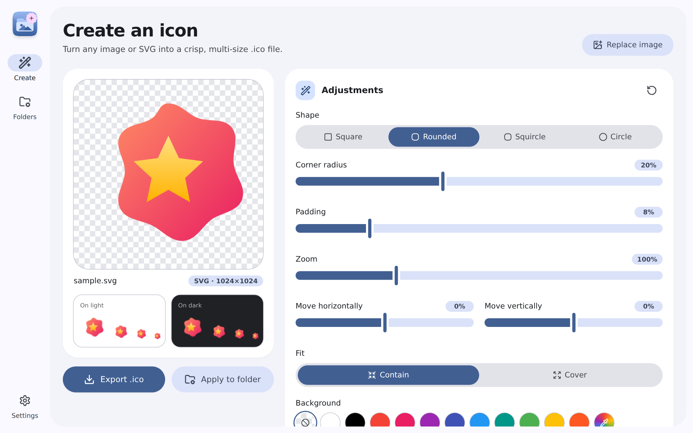

Free & open source · Windows 10/11
Material IcoIcons for your folders.
Simple Icon File Maker. Turn any PNG, JPG, WebP or SVG into a crisp multi-size .ico file and give your Windows folders a look of their own.

Everything you need,
nothing you don’t.
A focused tool built with Material 3 Expressive: fast, friendly and tuned for Windows folder icons.
See it in action
Light or dark, any theme color, English or Vietnamese.
Three steps to a new look
Drop an image
Drag in a PNG, JPG, WebP, GIF, BMP or SVG, or paste it with Ctrl+V.
Shape it
Pick a shape, padding, zoom and background while the preview updates live.
Export or apply
Save a multi-size .ico or apply it straight to any folder in one click.
Get Material Ico
Installs for the current user, no admin rights needed. Free forever, open source under the MIT license.
Download for Windows · v1.0.0Windows 10 or 11 (64-bit)
WebView2 included with Windows
Around 5 MB installer